This page re-runs LightGlue/SuperPoint matching for selected accepted frames. Green lines are RANSAC inlier matches. SAT frames use query IPM warp vs satellite mosaic. VPR_FALLBACK frames use query frame vs selected reference video frame.
Source CSV: outputs\hybrid\satellite_first_v14_refs_v11_v12_v13.csv
Smoothed CSV: outputs\hybrid\satellite_first_v14_refs_v11_v12_v13_smoothed.csv
Descriptor cache: outputs\anyloc\dji_mini3_cross_v11_v12_v13_to_v14_1fps_descriptors.npy
Accepted by SAT stage because satellite matching returned sat_status=ok after homography/RANSAC.
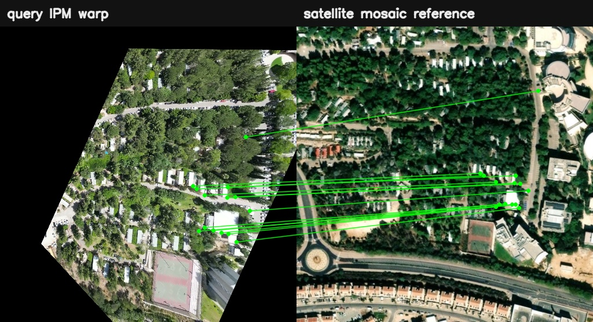
| frame_count | 241 |
|---|---|
| error_m | 58.712 |
| source | SAT |
| accepted_reason | Accepted by SAT stage because satellite matching returned sat_status=ok after homography/RANSAC. |
| sat_status | ok |
| sat_inliers_original | 12 |
| vpr_triggered | False |
| vpr_best_inliers_original | 0 |
| vpr_best_ratio_original | 0.0 |
| debug_type | SAT |
| reference_image | satellite mosaic |
| reference_source | data/satellite mosaic |
| reference_frame | |
| reference_path | |
| raw_matches_recomputed | 76 |
| ransac_inliers_recomputed | 14 |
| inlier_ratio_recomputed | 0.184 |
| drawn_lines | 14 |
| start_seconds | 8.007 |
| frame_path | data\processed\frames_v14_1fps\frame_000009.jpg |
| rel_alt_m | 118.4 |
| heading_deg | 114.08449221295365 |
| gt_lat | 32.10433141 |
| gt_lon | 35.20510882 |
| smoothed_lat | 32.10459405 |
| smoothed_lon | 35.20456888 |
| raw_final_lat | 32.104942 |
| raw_final_lon | 35.20398 |
| recomputed_lat | 32.10439 |
| recomputed_lon | 35.204132 |
Accepted by VPR fallback because satellite matching failed, then the retrieved reference frame passed the VPR inlier/ratio gate.
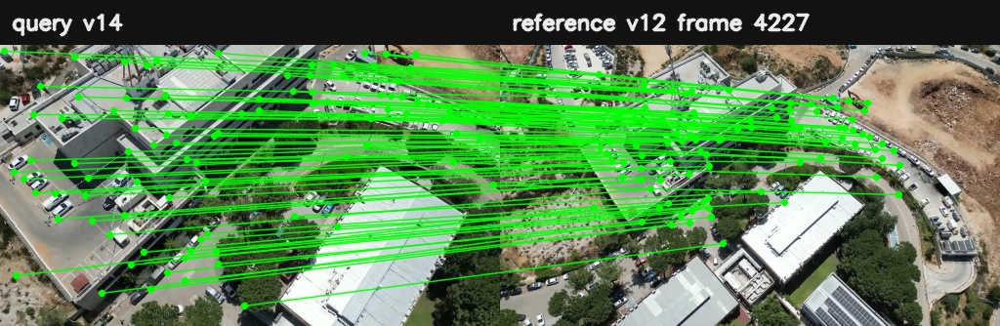
| frame_count | 2309 |
|---|---|
| error_m | 55.782 |
| source | VPR_FALLBACK |
| accepted_reason | Accepted by VPR fallback because satellite matching failed, then the retrieved reference frame passed the VPR inlier/ratio gate. |
| sat_status | ransac_fail |
| sat_inliers_original | 0 |
| vpr_triggered | True |
| vpr_best_inliers_original | 149 |
| vpr_best_ratio_original | 0.892 |
| debug_type | VPR_FALLBACK |
| reference_image | reference video frame |
| reference_source | v12 |
| reference_frame | 4227 |
| reference_path | data\processed\frames_v12_1fps\frame_000142.jpg |
| raw_matches_recomputed | 167 |
| ransac_inliers_recomputed | 149 |
| inlier_ratio_recomputed | 0.892 |
| drawn_lines | 90 |
| start_seconds | 77.002 |
| frame_path | data\processed\frames_v14_1fps\frame_000078.jpg |
| rel_alt_m | 75.2 |
| heading_deg | 32.93374685988806 |
| gt_lat | 32.10297634 |
| gt_lon | 35.20987132 |
| smoothed_lat | 32.10247536 |
| smoothed_lon | 35.20988347 |
| raw_final_lat | 32.10247237658621 |
| raw_final_lon | 35.20988177730126 |
| recomputed_lat | 32.10247237658621 |
| recomputed_lon | 35.20988177730126 |
Accepted by SAT stage because satellite matching returned sat_status=ok after homography/RANSAC.
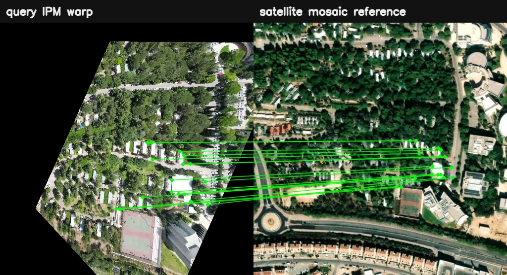
| frame_count | 271 |
|---|---|
| error_m | 51.796 |
| source | SAT |
| accepted_reason | Accepted by SAT stage because satellite matching returned sat_status=ok after homography/RANSAC. |
| sat_status | ok |
| sat_inliers_original | 15 |
| vpr_triggered | False |
| vpr_best_inliers_original | 0 |
| vpr_best_ratio_original | 0.0 |
| debug_type | SAT |
| reference_image | satellite mosaic |
| reference_source | data/satellite mosaic |
| reference_frame | |
| reference_path | |
| raw_matches_recomputed | 75 |
| ransac_inliers_recomputed | 17 |
| inlier_ratio_recomputed | 0.227 |
| drawn_lines | 17 |
| start_seconds | 9.008 |
| frame_path | data\processed\frames_v14_1fps\frame_000010.jpg |
| rel_alt_m | 118.4 |
| heading_deg | 113.91339003096874 |
| gt_lat | 32.10429408 |
| gt_lon | 35.2052117 |
| smoothed_lat | 32.10446242 |
| smoothed_lon | 35.20469963 |
| raw_final_lat | 32.10419 |
| raw_final_lon | 35.205067 |
| recomputed_lat | 32.104145 |
| recomputed_lon | 35.205223 |
Accepted by VPR fallback because satellite matching failed, then the retrieved reference frame passed the VPR inlier/ratio gate.
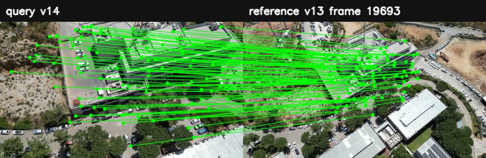
| frame_count | 2339 |
|---|---|
| error_m | 46.169 |
| source | VPR_FALLBACK |
| accepted_reason | Accepted by VPR fallback because satellite matching failed, then the retrieved reference frame passed the VPR inlier/ratio gate. |
| sat_status | ransac_fail |
| sat_inliers_original | 0 |
| vpr_triggered | True |
| vpr_best_inliers_original | 132 |
| vpr_best_ratio_original | 0.971 |
| debug_type | VPR_FALLBACK |
| reference_image | reference video frame |
| reference_source | v13 |
| reference_frame | 19693 |
| reference_path | data\processed\frames_v13_1fps\frame_000658.jpg |
| raw_matches_recomputed | 136 |
| ransac_inliers_recomputed | 132 |
| inlier_ratio_recomputed | 0.971 |
| drawn_lines | 90 |
| start_seconds | 78.003 |
| frame_path | data\processed\frames_v14_1fps\frame_000079.jpg |
| rel_alt_m | 72.2 |
| heading_deg | 30.21504547636141 |
| gt_lat | 32.10298259 |
| gt_lon | 35.20984947 |
| smoothed_lat | 32.10257021 |
| smoothed_lon | 35.20990174 |
| raw_final_lat | 32.10266727486189 |
| raw_final_lon | 35.209921727589595 |
| recomputed_lat | 32.10266727486189 |
| recomputed_lon | 35.209921727589595 |
Accepted by VPR fallback because satellite matching failed, then the retrieved reference frame passed the VPR inlier/ratio gate.
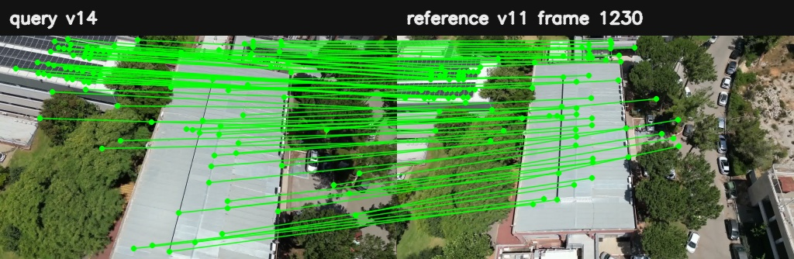
| frame_count | 2639 |
|---|---|
| error_m | 38.711 |
| source | VPR_FALLBACK |
| accepted_reason | Accepted by VPR fallback because satellite matching failed, then the retrieved reference frame passed the VPR inlier/ratio gate. |
| sat_status | ransac_fail |
| sat_inliers_original | 0 |
| vpr_triggered | True |
| vpr_best_inliers_original | 159 |
| vpr_best_ratio_original | 0.859 |
| debug_type | VPR_FALLBACK |
| reference_image | reference video frame |
| reference_source | v11 |
| reference_frame | 1230 |
| reference_path | data\processed\frames_v11_1fps\frame_000042.jpg |
| raw_matches_recomputed | 185 |
| ransac_inliers_recomputed | 159 |
| inlier_ratio_recomputed | 0.859 |
| drawn_lines | 90 |
| start_seconds | 88.012 |
| frame_path | data\processed\frames_v14_1fps\frame_000089.jpg |
| rel_alt_m | 42.2 |
| heading_deg | 141.66991738979425 |
| gt_lat | 32.10248231 |
| gt_lon | 35.20978924 |
| smoothed_lat | 32.10279277 |
| smoothed_lon | 35.20960431 |
| raw_final_lat | 32.10279268990399 |
| raw_final_lon | 35.20960434281518 |
| recomputed_lat | 32.10279268990399 |
| recomputed_lon | 35.20960434281518 |
Accepted by VPR fallback because satellite matching failed, then the retrieved reference frame passed the VPR inlier/ratio gate.
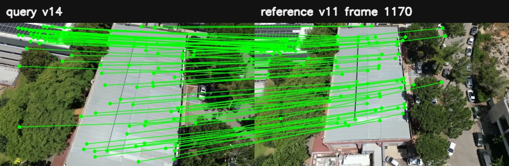
| frame_count | 2669 |
|---|---|
| error_m | 36.772 |
| source | VPR_FALLBACK |
| accepted_reason | Accepted by VPR fallback because satellite matching failed, then the retrieved reference frame passed the VPR inlier/ratio gate. |
| sat_status | ransac_fail |
| sat_inliers_original | 0 |
| vpr_triggered | True |
| vpr_best_inliers_original | 139 |
| vpr_best_ratio_original | 0.813 |
| debug_type | VPR_FALLBACK |
| reference_image | reference video frame |
| reference_source | v11 |
| reference_frame | 1170 |
| reference_path | data\processed\frames_v11_1fps\frame_000040.jpg |
| raw_matches_recomputed | 171 |
| ransac_inliers_recomputed | 139 |
| inlier_ratio_recomputed | 0.813 |
| drawn_lines | 90 |
| start_seconds | 89.013 |
| frame_path | data\processed\frames_v14_1fps\frame_000090.jpg |
| rel_alt_m | 39.2 |
| heading_deg | 143.02181011240623 |
| gt_lat | 32.10248058 |
| gt_lon | 35.20978437 |
| smoothed_lat | 32.10277544 |
| smoothed_lon | 35.20960858 |
| raw_final_lat | 32.10275813379867 |
| raw_final_lon | 35.20961283685613 |
| recomputed_lat | 32.10275813379867 |
| recomputed_lon | 35.20961283685613 |
Accepted by VPR fallback because satellite matching failed, then the retrieved reference frame passed the VPR inlier/ratio gate.
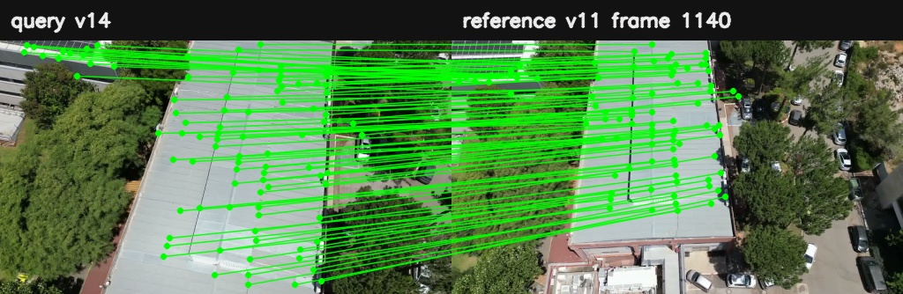
| frame_count | 2699 |
|---|---|
| error_m | 33.946 |
| source | VPR_FALLBACK |
| accepted_reason | Accepted by VPR fallback because satellite matching failed, then the retrieved reference frame passed the VPR inlier/ratio gate. |
| sat_status | ransac_fail |
| sat_inliers_original | 0 |
| vpr_triggered | True |
| vpr_best_inliers_original | 127 |
| vpr_best_ratio_original | 0.825 |
| debug_type | VPR_FALLBACK |
| reference_image | reference video frame |
| reference_source | v11 |
| reference_frame | 1140 |
| reference_path | data\processed\frames_v11_1fps\frame_000039.jpg |
| raw_matches_recomputed | 154 |
| ransac_inliers_recomputed | 127 |
| inlier_ratio_recomputed | 0.825 |
| drawn_lines | 90 |
| start_seconds | 90.014 |
| frame_path | data\processed\frames_v14_1fps\frame_000091.jpg |
| rel_alt_m | 36.3 |
| heading_deg | 145.87601168436908 |
| gt_lat | 32.10248015 |
| gt_lon | 35.20976968 |
| smoothed_lat | 32.10275463 |
| smoothed_lon | 35.20961285 |
| raw_final_lat | 32.10274084834777 |
| raw_final_lon | 35.20961539230925 |
| recomputed_lat | 32.10274084834777 |
| recomputed_lon | 35.20961539230925 |
Accepted by VPR fallback because satellite matching failed, then the retrieved reference frame passed the VPR inlier/ratio gate.
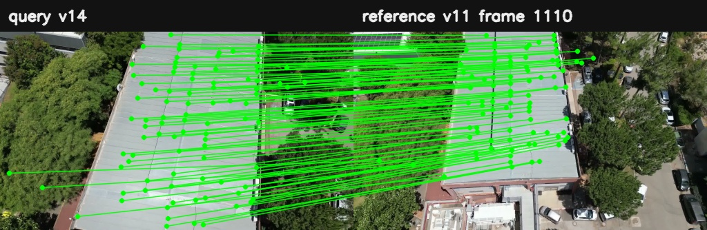
| frame_count | 2729 |
|---|---|
| error_m | 30.763 |
| source | VPR_FALLBACK |
| accepted_reason | Accepted by VPR fallback because satellite matching failed, then the retrieved reference frame passed the VPR inlier/ratio gate. |
| sat_status | ransac_fail |
| sat_inliers_original | 0 |
| vpr_triggered | True |
| vpr_best_inliers_original | 129 |
| vpr_best_ratio_original | 0.782 |
| debug_type | VPR_FALLBACK |
| reference_image | reference video frame |
| reference_source | v11 |
| reference_frame | 1110 |
| reference_path | data\processed\frames_v11_1fps\frame_000038.jpg |
| raw_matches_recomputed | 165 |
| ransac_inliers_recomputed | 129 |
| inlier_ratio_recomputed | 0.782 |
| drawn_lines | 90 |
| start_seconds | 91.015 |
| frame_path | data\processed\frames_v14_1fps\frame_000092.jpg |
| rel_alt_m | 33.3 |
| heading_deg | 145.87601168436908 |
| gt_lat | 32.10248903 |
| gt_lon | 35.20976238 |
| smoothed_lat | 32.10273586 |
| smoothed_lon | 35.20961568 |
| raw_final_lat | 32.10272407029511 |
| raw_final_lon | 35.20961713932973 |
| recomputed_lat | 32.10272407029511 |
| recomputed_lon | 35.20961713932973 |
Accepted by VPR fallback because satellite matching failed, then the retrieved reference frame passed the VPR inlier/ratio gate.
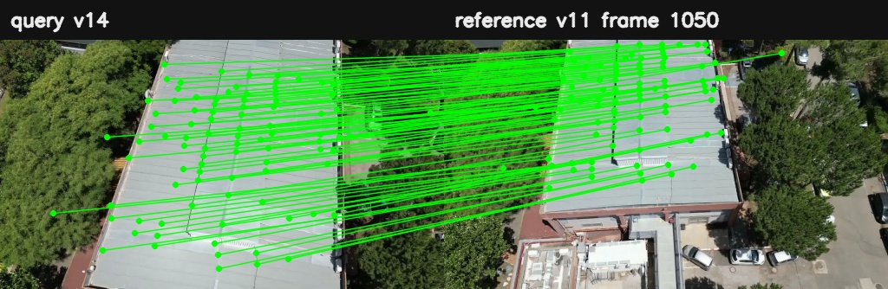
| frame_count | 2759 |
|---|---|
| error_m | 26.528 |
| source | VPR_FALLBACK |
| accepted_reason | Accepted by VPR fallback because satellite matching failed, then the retrieved reference frame passed the VPR inlier/ratio gate. |
| sat_status | few_matches |
| sat_inliers_original | 0 |
| vpr_triggered | True |
| vpr_best_inliers_original | 134 |
| vpr_best_ratio_original | 0.812 |
| debug_type | VPR_FALLBACK |
| reference_image | reference video frame |
| reference_source | v11 |
| reference_frame | 1050 |
| reference_path | data\processed\frames_v11_1fps\frame_000036.jpg |
| raw_matches_recomputed | 165 |
| ransac_inliers_recomputed | 134 |
| inlier_ratio_recomputed | 0.812 |
| drawn_lines | 90 |
| start_seconds | 92.015 |
| frame_path | data\processed\frames_v14_1fps\frame_000093.jpg |
| rel_alt_m | 30.3 |
| heading_deg | 145.87601168436908 |
| gt_lat | 32.10250191 |
| gt_lon | 35.20975007 |
| smoothed_lat | 32.10271279 |
| smoothed_lon | 35.20961905 |
| raw_final_lat | 32.1026955141898 |
| raw_final_lon | 35.20962163337068 |
| recomputed_lat | 32.1026955141898 |
| recomputed_lon | 35.20962163337068 |
Accepted by SAT stage because satellite matching returned sat_status=ok after homography/RANSAC.
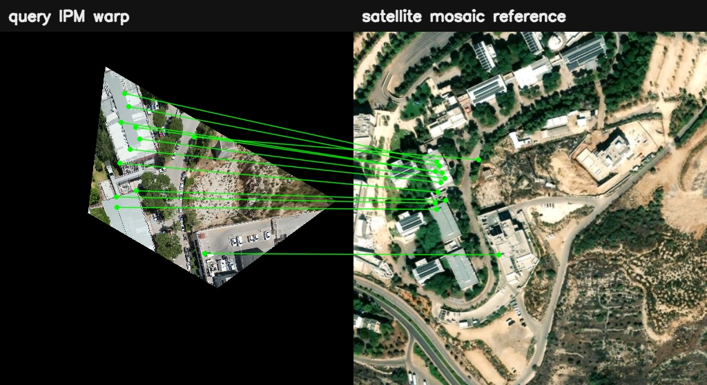
| frame_count | 2369 |
|---|---|
| error_m | 26.453 |
| source | SAT |
| accepted_reason | Accepted by SAT stage because satellite matching returned sat_status=ok after homography/RANSAC. |
| sat_status | ok |
| sat_inliers_original | 11 |
| vpr_triggered | False |
| vpr_best_inliers_original | 0 |
| vpr_best_ratio_original | 0.0 |
| debug_type | SAT |
| reference_image | satellite mosaic |
| reference_source | data/satellite mosaic |
| reference_frame | |
| reference_path | |
| raw_matches_recomputed | 58 |
| ransac_inliers_recomputed | 12 |
| inlier_ratio_recomputed | 0.207 |
| drawn_lines | 12 |
| start_seconds | 79.004 |
| frame_path | data\processed\frames_v14_1fps\frame_000080.jpg |
| rel_alt_m | 69.2 |
| heading_deg | 30.21504547636141 |
| gt_lat | 32.10296714 |
| gt_lon | 35.20983922 |
| smoothed_lat | 32.10272961 |
| smoothed_lon | 35.20984755 |
| raw_final_lat | 32.10285 |
| raw_final_lon | 35.209785 |
| recomputed_lat | 32.102905 |
| recomputed_lon | 35.209755 |
Accepted by SAT stage because satellite matching returned sat_status=ok after homography/RANSAC.
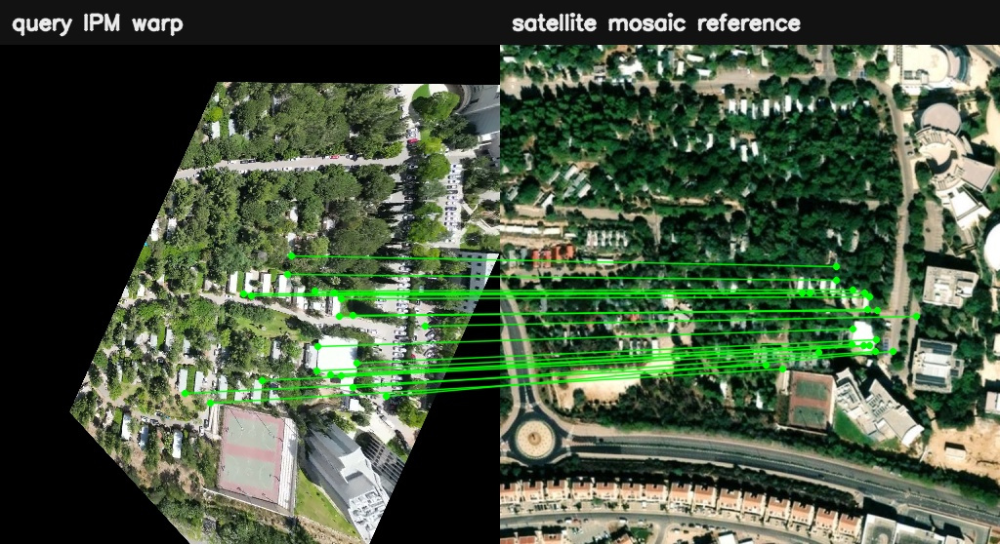
| frame_count | 301 |
|---|---|
| error_m | 23.957 |
| source | SAT |
| accepted_reason | Accepted by SAT stage because satellite matching returned sat_status=ok after homography/RANSAC. |
| sat_status | ok |
| sat_inliers_original | 15 |
| vpr_triggered | False |
| vpr_best_inliers_original | 0 |
| vpr_best_ratio_original | 0.0 |
| debug_type | SAT |
| reference_image | satellite mosaic |
| reference_source | data/satellite mosaic |
| reference_frame | |
| reference_path | |
| raw_matches_recomputed | 74 |
| ransac_inliers_recomputed | 20 |
| inlier_ratio_recomputed | 0.27 |
| drawn_lines | 20 |
| start_seconds | 10.008 |
| frame_path | data\processed\frames_v14_1fps\frame_000011.jpg |
| rel_alt_m | 118.4 |
| heading_deg | 114.0844922136128 |
| gt_lat | 32.10425441 |
| gt_lon | 35.20531382 |
| smoothed_lat | 32.10429261 |
| smoothed_lon | 35.20506380 |
| raw_final_lat | 32.104206 |
| raw_final_lon | 35.205326 |
| recomputed_lat | 32.104103 |
| recomputed_lon | 35.20548 |
Accepted by VPR fallback because satellite matching failed, then the retrieved reference frame passed the VPR inlier/ratio gate.
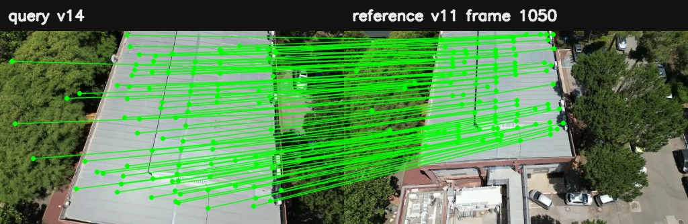
| frame_count | 2789 |
|---|---|
| error_m | 23.508 |
| source | VPR_FALLBACK |
| accepted_reason | Accepted by VPR fallback because satellite matching failed, then the retrieved reference frame passed the VPR inlier/ratio gate. |
| sat_status | ransac_fail |
| sat_inliers_original | 0 |
| vpr_triggered | True |
| vpr_best_inliers_original | 151 |
| vpr_best_ratio_original | 0.899 |
| debug_type | VPR_FALLBACK |
| reference_image | reference video frame |
| reference_source | v11 |
| reference_frame | 1050 |
| reference_path | data\processed\frames_v11_1fps\frame_000036.jpg |
| raw_matches_recomputed | 168 |
| ransac_inliers_recomputed | 151 |
| inlier_ratio_recomputed | 0.899 |
| drawn_lines | 90 |
| start_seconds | 93.016 |
| frame_path | data\processed\frames_v14_1fps\frame_000094.jpg |
| rel_alt_m | 27.3 |
| heading_deg | 145.87601168436908 |
| gt_lat | 32.10250979 |
| gt_lon | 35.20972877 |
| smoothed_lat | 32.10270018 |
| smoothed_lon | 35.20962092 |
| raw_final_lat | 32.1026955141898 |
| raw_final_lon | 35.20962163337068 |
| recomputed_lat | 32.1026955141898 |
| recomputed_lon | 35.20962163337068 |
Accepted by VPR fallback because satellite matching failed, then the retrieved reference frame passed the VPR inlier/ratio gate.
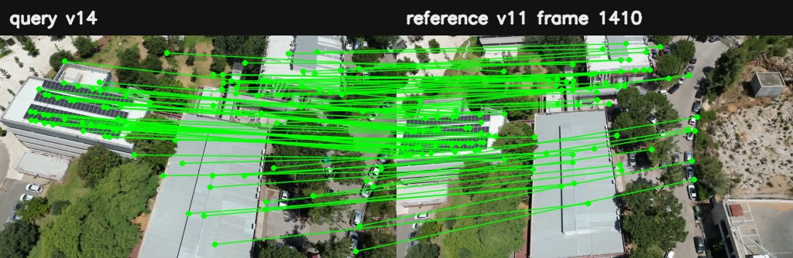
| frame_count | 2459 |
|---|---|
| error_m | 22.724 |
| source | VPR_FALLBACK |
| accepted_reason | Accepted by VPR fallback because satellite matching failed, then the retrieved reference frame passed the VPR inlier/ratio gate. |
| sat_status | ransac_fail |
| sat_inliers_original | 0 |
| vpr_triggered | True |
| vpr_best_inliers_original | 210 |
| vpr_best_ratio_original | 0.905 |
| debug_type | VPR_FALLBACK |
| reference_image | reference video frame |
| reference_source | v11 |
| reference_frame | 1410 |
| reference_path | data\processed\frames_v11_1fps\frame_000048.jpg |
| raw_matches_recomputed | 232 |
| ransac_inliers_recomputed | 210 |
| inlier_ratio_recomputed | 0.905 |
| drawn_lines | 90 |
| start_seconds | 82.006 |
| frame_path | data\processed\frames_v14_1fps\frame_000083.jpg |
| rel_alt_m | 60.1 |
| heading_deg | 30.21504547636141 |
| gt_lat | 32.10292636 |
| gt_lon | 35.20981318 |
| smoothed_lat | 32.10286640 |
| smoothed_lon | 35.20958283 |
| raw_final_lat | 32.10288534342346 |
| raw_final_lon | 35.20957247755763 |
| recomputed_lat | 32.10288534342346 |
| recomputed_lon | 35.20957247755763 |
Accepted by VPR fallback because satellite matching failed, then the retrieved reference frame passed the VPR inlier/ratio gate.
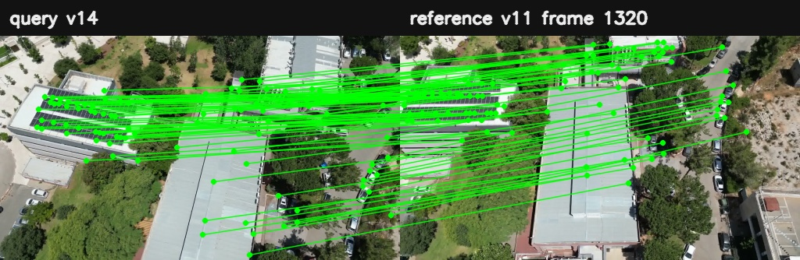
| frame_count | 2429 |
|---|---|
| error_m | 22.012 |
| source | VPR_FALLBACK |
| accepted_reason | Accepted by VPR fallback because satellite matching failed, then the retrieved reference frame passed the VPR inlier/ratio gate. |
| sat_status | ransac_fail |
| sat_inliers_original | 0 |
| vpr_triggered | True |
| vpr_best_inliers_original | 173 |
| vpr_best_ratio_original | 0.828 |
| debug_type | VPR_FALLBACK |
| reference_image | reference video frame |
| reference_source | v11 |
| reference_frame | 1320 |
| reference_path | data\processed\frames_v11_1fps\frame_000045.jpg |
| raw_matches_recomputed | 209 |
| ransac_inliers_recomputed | 173 |
| inlier_ratio_recomputed | 0.828 |
| drawn_lines | 90 |
| start_seconds | 81.006 |
| frame_path | data\processed\frames_v14_1fps\frame_000082.jpg |
| rel_alt_m | 63.2 |
| heading_deg | 30.21504547636141 |
| gt_lat | 32.10293925 |
| gt_lon | 35.20982273 |
| smoothed_lat | 32.10285025 |
| smoothed_lon | 35.20961429 |
| raw_final_lat | 32.10283500926548 |
| raw_final_lon | 35.20958671861906 |
| recomputed_lat | 32.10283500926548 |
| recomputed_lon | 35.20958671861906 |
Accepted by VPR fallback because satellite matching failed, then the retrieved reference frame passed the VPR inlier/ratio gate.
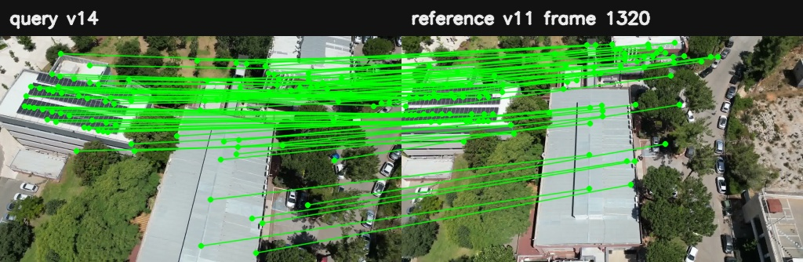
| frame_count | 2489 |
|---|---|
| error_m | 21.909 |
| source | VPR_FALLBACK |
| accepted_reason | Accepted by VPR fallback because satellite matching failed, then the retrieved reference frame passed the VPR inlier/ratio gate. |
| sat_status | ransac_fail |
| sat_inliers_original | 0 |
| vpr_triggered | True |
| vpr_best_inliers_original | 176 |
| vpr_best_ratio_original | 0.826 |
| debug_type | VPR_FALLBACK |
| reference_image | reference video frame |
| reference_source | v11 |
| reference_frame | 1320 |
| reference_path | data\processed\frames_v11_1fps\frame_000045.jpg |
| raw_matches_recomputed | 213 |
| ransac_inliers_recomputed | 176 |
| inlier_ratio_recomputed | 0.826 |
| drawn_lines | 90 |
| start_seconds | 83.007 |
| frame_path | data\processed\frames_v14_1fps\frame_000084.jpg |
| rel_alt_m | 57.2 |
| heading_deg | 30.21504547636141 |
| gt_lat | 32.10291336 |
| gt_lon | 35.20980325 |
| smoothed_lat | 32.10285389 |
| smoothed_lon | 35.20958177 |
| raw_final_lat | 32.10283500926548 |
| raw_final_lon | 35.20958671861906 |
| recomputed_lat | 32.10283500926548 |
| recomputed_lon | 35.20958671861906 |
Accepted by SAT stage because satellite matching returned sat_status=ok after homography/RANSAC.
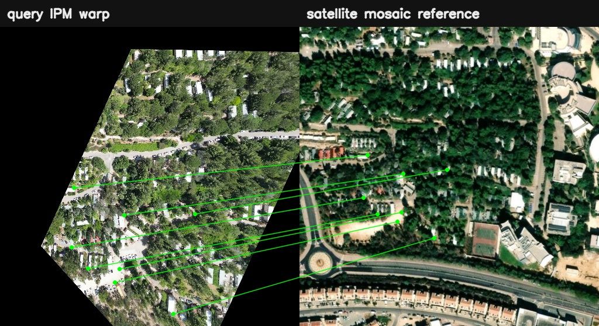
| frame_count | 31 |
|---|---|
| error_m | 20.981 |
| source | SAT |
| accepted_reason | Accepted by SAT stage because satellite matching returned sat_status=ok after homography/RANSAC. |
| sat_status | ok |
| sat_inliers_original | 13 |
| vpr_triggered | False |
| vpr_best_inliers_original | 0 |
| vpr_best_ratio_original | 0.0 |
| debug_type | SAT |
| reference_image | satellite mosaic |
| reference_source | data/satellite mosaic |
| reference_frame | |
| reference_path | |
| raw_matches_recomputed | 60 |
| ransac_inliers_recomputed | 8 |
| inlier_ratio_recomputed | 0.133 |
| drawn_lines | 8 |
| start_seconds | 1.0 |
| frame_path | data\processed\frames_v14_1fps\frame_000002.jpg |
| rel_alt_m | 118.4 |
| heading_deg | 114.55942409784149 |
| gt_lat | 32.10457277 |
| gt_lon | 35.20445435 |
| smoothed_lat | 32.10442070 |
| smoothed_lon | 35.20458580 |
| raw_final_lat | 32.1044 |
| raw_final_lon | 35.20458 |
| recomputed_lat | 32.10445 |
| recomputed_lon | 35.2046 |
Accepted by VPR fallback because satellite matching failed, then the retrieved reference frame passed the VPR inlier/ratio gate.
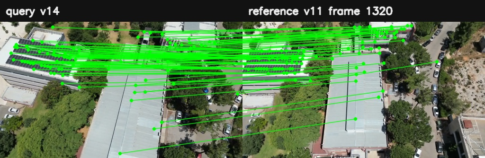
| frame_count | 2519 |
|---|---|
| error_m | 20.765 |
| source | VPR_FALLBACK |
| accepted_reason | Accepted by VPR fallback because satellite matching failed, then the retrieved reference frame passed the VPR inlier/ratio gate. |
| sat_status | ransac_fail |
| sat_inliers_original | 0 |
| vpr_triggered | True |
| vpr_best_inliers_original | 200 |
| vpr_best_ratio_original | 0.881 |
| debug_type | VPR_FALLBACK |
| reference_image | reference video frame |
| reference_source | v11 |
| reference_frame | 1320 |
| reference_path | data\processed\frames_v11_1fps\frame_000045.jpg |
| raw_matches_recomputed | 227 |
| ransac_inliers_recomputed | 200 |
| inlier_ratio_recomputed | 0.881 |
| drawn_lines | 90 |
| start_seconds | 84.008 |
| frame_path | data\processed\frames_v14_1fps\frame_000085.jpg |
| rel_alt_m | 54.2 |
| heading_deg | 30.21504547636141 |
| gt_lat | 32.10289991 |
| gt_lon | 35.209794 |
| smoothed_lat | 32.10284137 |
| smoothed_lon | 35.20958492 |
| raw_final_lat | 32.10283500926548 |
| raw_final_lon | 35.20958671861906 |
| recomputed_lat | 32.10283500926548 |
| recomputed_lon | 35.20958671861906 |
Accepted by SAT stage because satellite matching returned sat_status=ok after homography/RANSAC.
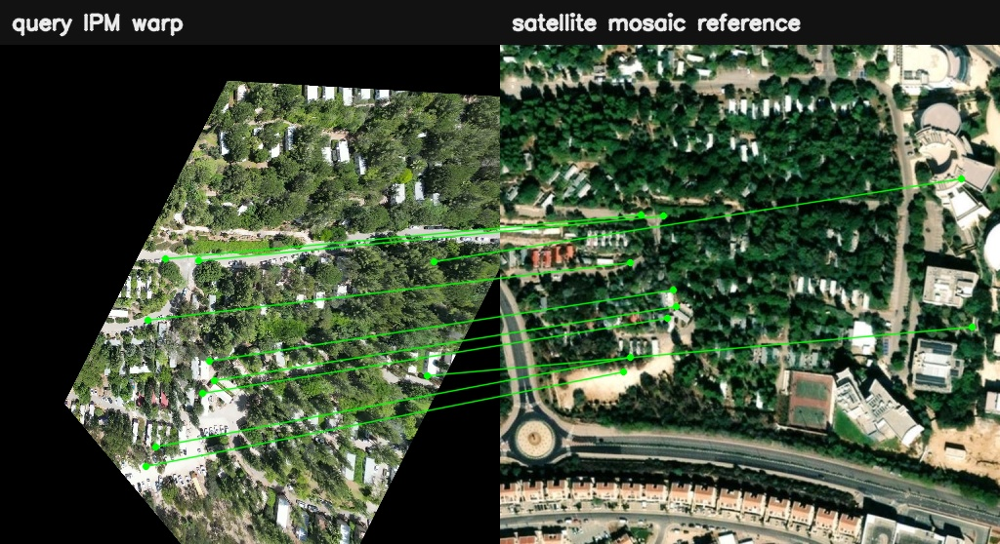
| frame_count | 1 |
|---|---|
| error_m | 19.666 |
| source | SAT |
| accepted_reason | Accepted by SAT stage because satellite matching returned sat_status=ok after homography/RANSAC. |
| sat_status | ok |
| sat_inliers_original | 13 |
| vpr_triggered | False |
| vpr_best_inliers_original | 0 |
| vpr_best_ratio_original | 0.0 |
| debug_type | SAT |
| reference_image | satellite mosaic |
| reference_source | data/satellite mosaic |
| reference_frame | |
| reference_path | |
| raw_matches_recomputed | 55 |
| ransac_inliers_recomputed | 10 |
| inlier_ratio_recomputed | 0.182 |
| drawn_lines | 10 |
| start_seconds | 0.0 |
| frame_path | data\processed\frames_v14_1fps\frame_000001.jpg |
| rel_alt_m | 118.4 |
| heading_deg | 116.83674052193447 |
| gt_lat | 32.10455678 |
| gt_lon | 35.20442785 |
| smoothed_lat | 32.10445000 |
| smoothed_lon | 35.20459400 |
| raw_final_lat | 32.10445 |
| raw_final_lon | 35.204594 |
| recomputed_lat | 32.104504 |
| recomputed_lon | 35.20465 |
Accepted by SAT stage because satellite matching returned sat_status=ok after homography/RANSAC.
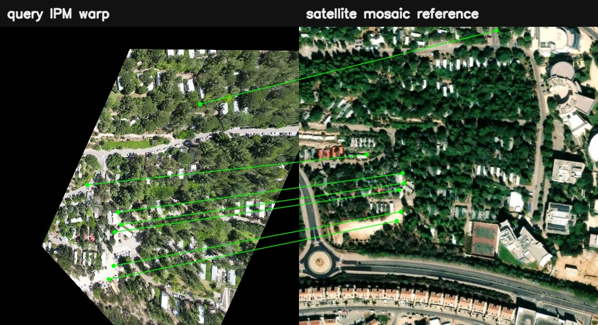
| frame_count | 61 |
|---|---|
| error_m | 19.661 |
| source | SAT |
| accepted_reason | Accepted by SAT stage because satellite matching returned sat_status=ok after homography/RANSAC. |
| sat_status | ok |
| sat_inliers_original | 10 |
| vpr_triggered | False |
| vpr_best_inliers_original | 0 |
| vpr_best_ratio_original | 0.0 |
| debug_type | SAT |
| reference_image | satellite mosaic |
| reference_source | data/satellite mosaic |
| reference_frame | |
| reference_path | |
| raw_matches_recomputed | 44 |
| ransac_inliers_recomputed | 7 |
| inlier_ratio_recomputed | 0.159 |
| drawn_lines | 7 |
| start_seconds | 2.001 |
| frame_path | data\processed\frames_v14_1fps\frame_000003.jpg |
| rel_alt_m | 118.4 |
| heading_deg | 114.09278459249117 |
| gt_lat | 32.10455933 |
| gt_lon | 35.20450478 |
| smoothed_lat | 32.10442171 |
| smoothed_lon | 35.20463547 |
| raw_final_lat | 32.10443 |
| raw_final_lon | 35.204685 |
| recomputed_lat | None |
| recomputed_lon | None |
Accepted by VPR fallback because satellite matching failed, then the retrieved reference frame passed the VPR inlier/ratio gate.
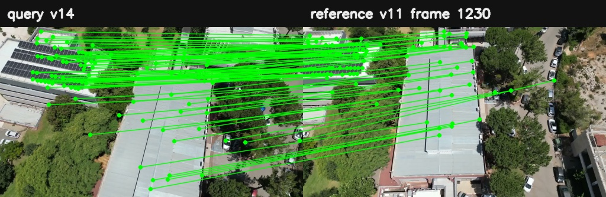
| frame_count | 2549 |
|---|---|
| error_m | 19.566 |
| source | VPR_FALLBACK |
| accepted_reason | Accepted by VPR fallback because satellite matching failed, then the retrieved reference frame passed the VPR inlier/ratio gate. |
| sat_status | ransac_fail |
| sat_inliers_original | 0 |
| vpr_triggered | True |
| vpr_best_inliers_original | 157 |
| vpr_best_ratio_original | 0.831 |
| debug_type | VPR_FALLBACK |
| reference_image | reference video frame |
| reference_source | v11 |
| reference_frame | 1230 |
| reference_path | data\processed\frames_v11_1fps\frame_000042.jpg |
| raw_matches_recomputed | 189 |
| ransac_inliers_recomputed | 157 |
| inlier_ratio_recomputed | 0.831 |
| drawn_lines | 90 |
| start_seconds | 85.009 |
| frame_path | data\processed\frames_v14_1fps\frame_000086.jpg |
| rel_alt_m | 51.2 |
| heading_deg | 30.21504547636141 |
| gt_lat | 32.10288647 |
| gt_lon | 35.20978476 |
| smoothed_lat | 32.10281499 |
| smoothed_lon | 35.20959520 |
| raw_final_lat | 32.10279268990399 |
| raw_final_lon | 35.20960434281518 |
| recomputed_lat | 32.10279268990399 |
| recomputed_lon | 35.20960434281518 |
Accepted by SAT stage because satellite matching returned sat_status=ok after homography/RANSAC.
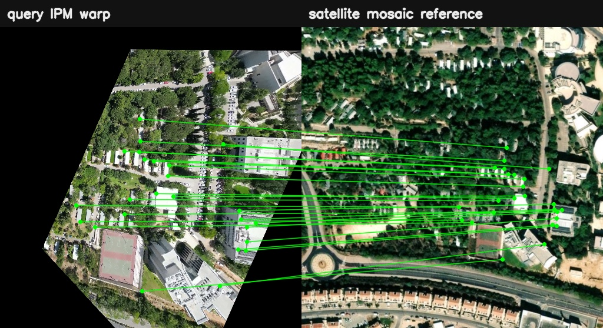
| frame_count | 391 |
|---|---|
| error_m | 18.482 |
| source | SAT |
| accepted_reason | Accepted by SAT stage because satellite matching returned sat_status=ok after homography/RANSAC. |
| sat_status | ok |
| sat_inliers_original | 19 |
| vpr_triggered | False |
| vpr_best_inliers_original | 0 |
| vpr_best_ratio_original | 0.0 |
| debug_type | SAT |
| reference_image | satellite mosaic |
| reference_source | data/satellite mosaic |
| reference_frame | |
| reference_path | |
| raw_matches_recomputed | 74 |
| ransac_inliers_recomputed | 25 |
| inlier_ratio_recomputed | 0.338 |
| drawn_lines | 25 |
| start_seconds | 13.011 |
| frame_path | data\processed\frames_v14_1fps\frame_000014.jpg |
| rel_alt_m | 118.4 |
| heading_deg | 113.87891414764857 |
| gt_lat | 32.10413842 |
| gt_lon | 35.20562488 |
| smoothed_lat | 32.10401360 |
| smoothed_lon | 35.20575411 |
| raw_final_lat | 32.103985 |
| raw_final_lon | 35.205833 |
| recomputed_lat | 32.103996 |
| recomputed_lon | 35.205807 |
Accepted by VPR fallback because satellite matching failed, then the retrieved reference frame passed the VPR inlier/ratio gate.
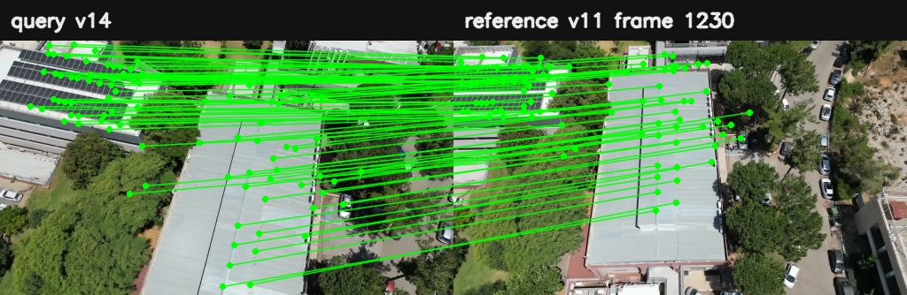
| frame_count | 2579 |
|---|---|
| error_m | 18.308 |
| source | VPR_FALLBACK |
| accepted_reason | Accepted by VPR fallback because satellite matching failed, then the retrieved reference frame passed the VPR inlier/ratio gate. |
| sat_status | ransac_fail |
| sat_inliers_original | 0 |
| vpr_triggered | True |
| vpr_best_inliers_original | 178 |
| vpr_best_ratio_original | 0.881 |
| debug_type | VPR_FALLBACK |
| reference_image | reference video frame |
| reference_source | v11 |
| reference_frame | 1230 |
| reference_path | data\processed\frames_v11_1fps\frame_000042.jpg |
| raw_matches_recomputed | 202 |
| ransac_inliers_recomputed | 178 |
| inlier_ratio_recomputed | 0.881 |
| drawn_lines | 90 |
| start_seconds | 86.01 |
| frame_path | data\processed\frames_v14_1fps\frame_000087.jpg |
| rel_alt_m | 48.2 |
| heading_deg | 30.21504547636141 |
| gt_lat | 32.10287402 |
| gt_lon | 35.20977452 |
| smoothed_lat | 32.10279906 |
| smoothed_lon | 35.20960170 |
| raw_final_lat | 32.10279268990399 |
| raw_final_lon | 35.20960434281518 |
| recomputed_lat | 32.10279268990399 |
| recomputed_lon | 35.20960434281518 |
Accepted by VPR fallback because satellite matching failed, then the retrieved reference frame passed the VPR inlier/ratio gate.
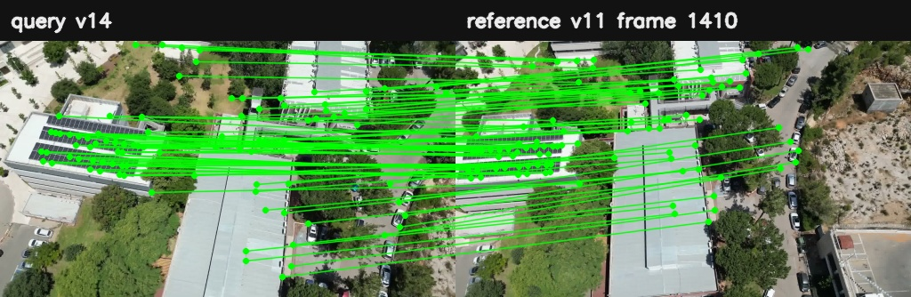
| frame_count | 2399 |
|---|---|
| error_m | 18.127 |
| source | VPR_FALLBACK |
| accepted_reason | Accepted by VPR fallback because satellite matching failed, then the retrieved reference frame passed the VPR inlier/ratio gate. |
| sat_status | ransac_fail |
| sat_inliers_original | 0 |
| vpr_triggered | True |
| vpr_best_inliers_original | 234 |
| vpr_best_ratio_original | 0.903 |
| debug_type | VPR_FALLBACK |
| reference_image | reference video frame |
| reference_source | v11 |
| reference_frame | 1410 |
| reference_path | data\processed\frames_v11_1fps\frame_000048.jpg |
| raw_matches_recomputed | 259 |
| ransac_inliers_recomputed | 234 |
| inlier_ratio_recomputed | 0.903 |
| drawn_lines | 90 |
| start_seconds | 80.005 |
| frame_path | data\processed\frames_v14_1fps\frame_000081.jpg |
| rel_alt_m | 66.2 |
| heading_deg | 30.21504547636141 |
| gt_lat | 32.1029537 |
| gt_lon | 35.20983098 |
| smoothed_lat | 32.10283589 |
| smoothed_lon | 35.20969826 |
| raw_final_lat | 32.10288534342346 |
| raw_final_lon | 35.20957247755763 |
| recomputed_lat | 32.10288534342346 |
| recomputed_lon | 35.20957247755763 |
Accepted by SAT stage because satellite matching returned sat_status=ok after homography/RANSAC.
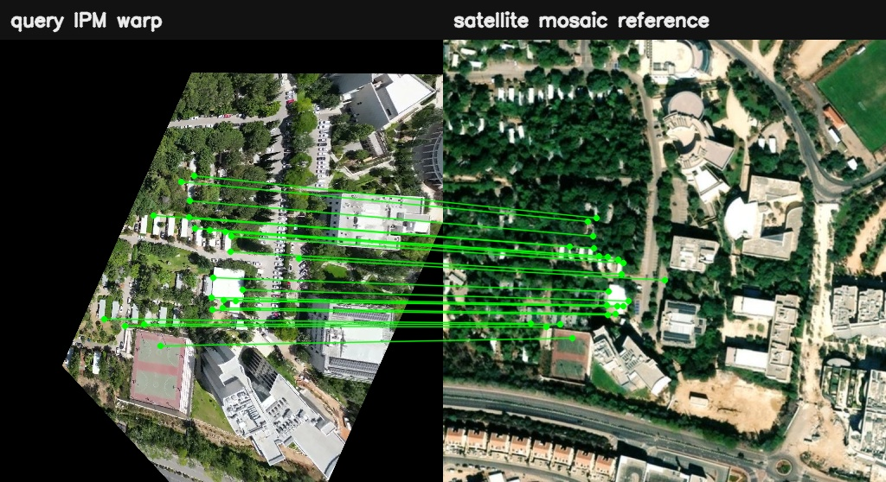
| frame_count | 421 |
|---|---|
| error_m | 18.032 |
| source | SAT |
| accepted_reason | Accepted by SAT stage because satellite matching returned sat_status=ok after homography/RANSAC. |
| sat_status | ok |
| sat_inliers_original | 24 |
| vpr_triggered | False |
| vpr_best_inliers_original | 0 |
| vpr_best_ratio_original | 0.0 |
| debug_type | SAT |
| reference_image | satellite mosaic |
| reference_source | data/satellite mosaic |
| reference_frame | |
| reference_path | |
| raw_matches_recomputed | 75 |
| ransac_inliers_recomputed | 22 |
| inlier_ratio_recomputed | 0.293 |
| drawn_lines | 22 |
| start_seconds | 14.012 |
| frame_path | data\processed\frames_v14_1fps\frame_000015.jpg |
| rel_alt_m | 118.4 |
| heading_deg | 113.81024242933336 |
| gt_lat | 32.10410009 |
| gt_lon | 35.20572923 |
| smoothed_lat | 32.10397444 |
| smoothed_lon | 35.20584992 |
| raw_final_lat | 32.10395 |
| raw_final_lon | 35.205906 |
| recomputed_lat | 32.103947 |
| recomputed_lon | 35.205917 |
Accepted by VPR fallback because satellite matching failed, then the retrieved reference frame passed the VPR inlier/ratio gate.
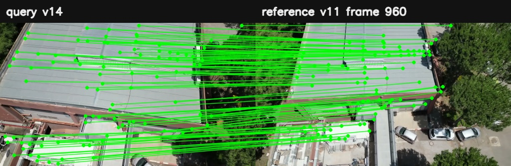
| frame_count | 2968 |
|---|---|
| error_m | 17.587 |
| source | VPR_FALLBACK |
| accepted_reason | Accepted by VPR fallback because satellite matching failed, then the retrieved reference frame passed the VPR inlier/ratio gate. |
| sat_status | low_alt |
| sat_inliers_original | 0 |
| vpr_triggered | True |
| vpr_best_inliers_original | 154 |
| vpr_best_ratio_original | 0.755 |
| debug_type | VPR_FALLBACK |
| reference_image | reference video frame |
| reference_source | v11 |
| reference_frame | 960 |
| reference_path | data\processed\frames_v11_1fps\frame_000033.jpg |
| raw_matches_recomputed | 204 |
| ransac_inliers_recomputed | 154 |
| inlier_ratio_recomputed | 0.755 |
| drawn_lines | 90 |
| start_seconds | 98.988 |
| frame_path | data\processed\frames_v14_1fps\frame_000100.jpg |
| rel_alt_m | 17.6 |
| heading_deg | 149.12324510817655 |
| gt_lat | 32.10252866 |
| gt_lon | 35.2097453 |
| smoothed_lat | 32.10265517 |
| smoothed_lon | 35.20963358 |
| raw_final_lat | 32.10265418003181 |
| raw_final_lon | 35.20963387443211 |
| recomputed_lat | 32.10265418003181 |
| recomputed_lon | 35.20963387443211 |
Accepted by SAT stage because satellite matching returned sat_status=ok after homography/RANSAC.
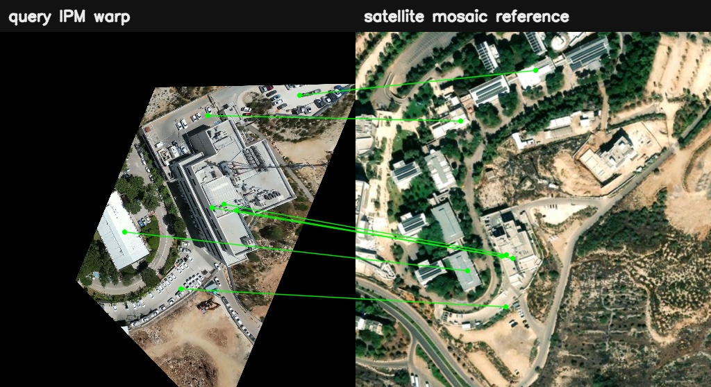
| frame_count | 2099 |
|---|---|
| error_m | 17.464 |
| source | SAT |
| accepted_reason | Accepted by SAT stage because satellite matching returned sat_status=ok after homography/RANSAC. |
| sat_status | ok |
| sat_inliers_original | 8 |
| vpr_triggered | False |
| vpr_best_inliers_original | 0 |
| vpr_best_ratio_original | 0.0 |
| debug_type | SAT |
| reference_image | satellite mosaic |
| reference_source | data/satellite mosaic |
| reference_frame | |
| reference_path | |
| raw_matches_recomputed | 35 |
| ransac_inliers_recomputed | 7 |
| inlier_ratio_recomputed | 0.2 |
| drawn_lines | 7 |
| start_seconds | 69.996 |
| frame_path | data\processed\frames_v14_1fps\frame_000071.jpg |
| rel_alt_m | 96.2 |
| heading_deg | 112.44970612366541 |
| gt_lat | 32.10245247 |
| gt_lon | 35.21015737 |
| smoothed_lat | 32.10246186 |
| smoothed_lon | 35.20997250 |
| raw_final_lat | 32.102474 |
| raw_final_lon | 35.209938 |
| recomputed_lat | None |
| recomputed_lon | None |
Accepted by SAT stage because satellite matching returned sat_status=ok after homography/RANSAC.
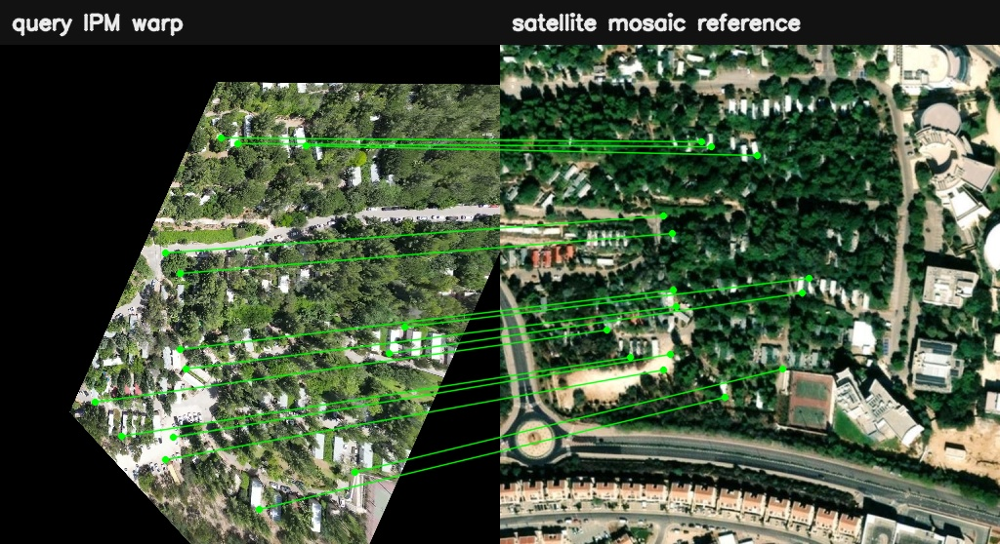
| frame_count | 91 |
|---|---|
| error_m | 17.445 |
| source | SAT |
| accepted_reason | Accepted by SAT stage because satellite matching returned sat_status=ok after homography/RANSAC. |
| sat_status | ok |
| sat_inliers_original | 10 |
| vpr_triggered | False |
| vpr_best_inliers_original | 0 |
| vpr_best_ratio_original | 0.0 |
| debug_type | SAT |
| reference_image | satellite mosaic |
| reference_source | data/satellite mosaic |
| reference_frame | |
| reference_path | |
| raw_matches_recomputed | 60 |
| ransac_inliers_recomputed | 15 |
| inlier_ratio_recomputed | 0.25 |
| drawn_lines | 15 |
| start_seconds | 3.002 |
| frame_path | data\processed\frames_v14_1fps\frame_000004.jpg |
| rel_alt_m | 118.4 |
| heading_deg | 114.02915280823976 |
| gt_lat | 32.10452795 |
| gt_lon | 35.20458911 |
| smoothed_lat | 32.10441670 |
| smoothed_lon | 35.20471941 |
| raw_final_lat | 32.10441 |
| raw_final_lon | 35.204784 |
| recomputed_lat | 32.10439 |
| recomputed_lon | 35.20476 |
Accepted by VPR fallback because satellite matching failed, then the retrieved reference frame passed the VPR inlier/ratio gate.
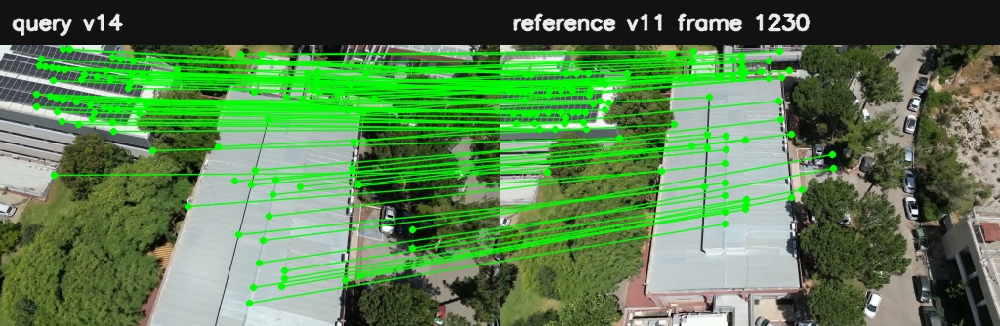
| frame_count | 2609 |
|---|---|
| error_m | 16.939 |
| source | VPR_FALLBACK |
| accepted_reason | Accepted by VPR fallback because satellite matching failed, then the retrieved reference frame passed the VPR inlier/ratio gate. |
| sat_status | ransac_fail |
| sat_inliers_original | 0 |
| vpr_triggered | True |
| vpr_best_inliers_original | 170 |
| vpr_best_ratio_original | 0.885 |
| debug_type | VPR_FALLBACK |
| reference_image | reference video frame |
| reference_source | v11 |
| reference_frame | 1230 |
| reference_path | data\processed\frames_v11_1fps\frame_000042.jpg |
| raw_matches_recomputed | 192 |
| ransac_inliers_recomputed | 170 |
| inlier_ratio_recomputed | 0.885 |
| drawn_lines | 90 |
| start_seconds | 87.011 |
| frame_path | data\processed\frames_v14_1fps\frame_000088.jpg |
| rel_alt_m | 45.2 |
| heading_deg | 30.21504547636141 |
| gt_lat | 32.10286058 |
| gt_lon | 35.20976527 |
| smoothed_lat | 32.10279370 |
| smoothed_lon | 35.20960392 |
| raw_final_lat | 32.10279268990399 |
| raw_final_lon | 35.20960434281518 |
| recomputed_lat | 32.10279268990399 |
| recomputed_lon | 35.20960434281518 |
Accepted by SAT stage because satellite matching returned sat_status=ok after homography/RANSAC.
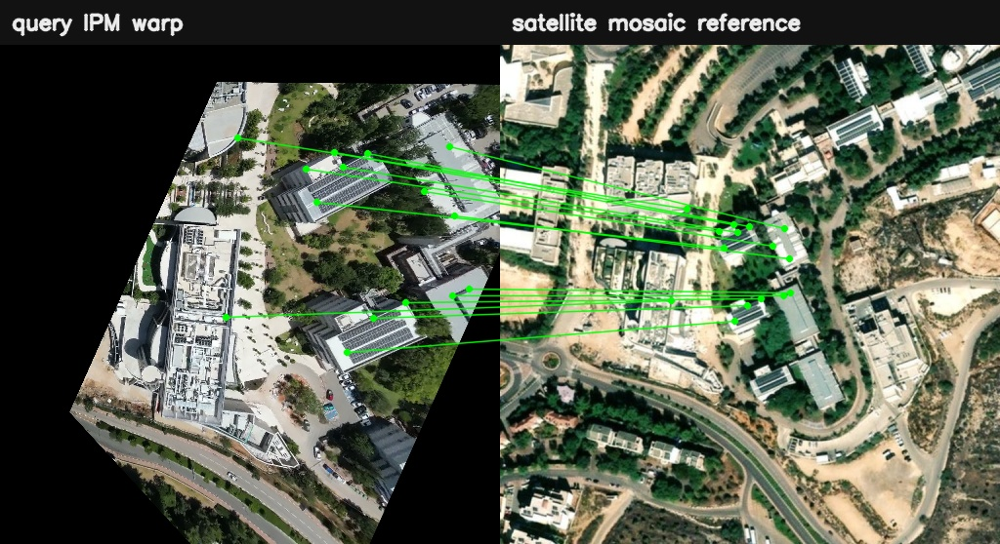
| frame_count | 1290 |
|---|---|
| error_m | 16.608 |
| source | SAT |
| accepted_reason | Accepted by SAT stage because satellite matching returned sat_status=ok after homography/RANSAC. |
| sat_status | ok |
| sat_inliers_original | 13 |
| vpr_triggered | False |
| vpr_best_inliers_original | 0 |
| vpr_best_ratio_original | 0.0 |
| debug_type | SAT |
| reference_image | satellite mosaic |
| reference_source | data/satellite mosaic |
| reference_frame | |
| reference_path | |
| raw_matches_recomputed | 68 |
| ransac_inliers_recomputed | 15 |
| inlier_ratio_recomputed | 0.221 |
| drawn_lines | 15 |
| start_seconds | 43.005 |
| frame_path | data\processed\frames_v14_1fps\frame_000044.jpg |
| rel_alt_m | 118.4 |
| heading_deg | 114.01738204315416 |
| gt_lat | 32.10298406 |
| gt_lon | 35.20869517 |
| smoothed_lat | 32.10300416 |
| smoothed_lon | 35.20852065 |
| raw_final_lat | 32.10298 |
| raw_final_lon | 35.208557 |
| recomputed_lat | 32.102966 |
| recomputed_lon | 35.20859 |
Accepted by SAT stage because satellite matching returned sat_status=ok after homography/RANSAC.
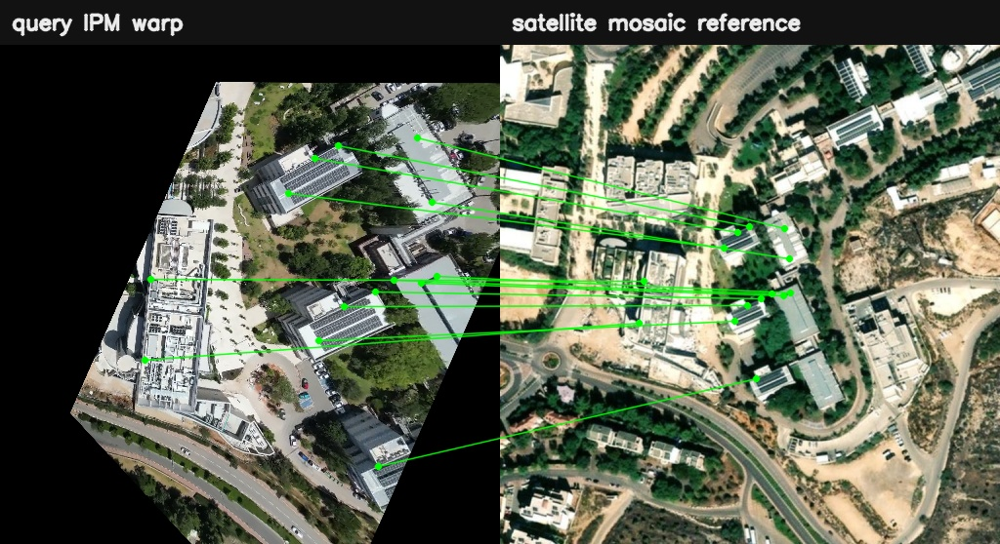
| frame_count | 1320 |
|---|---|
| error_m | 16.515 |
| source | SAT |
| accepted_reason | Accepted by SAT stage because satellite matching returned sat_status=ok after homography/RANSAC. |
| sat_status | ok |
| sat_inliers_original | 14 |
| vpr_triggered | False |
| vpr_best_inliers_original | 0 |
| vpr_best_ratio_original | 0.0 |
| debug_type | SAT |
| reference_image | satellite mosaic |
| reference_source | data/satellite mosaic |
| reference_frame | |
| reference_path | |
| raw_matches_recomputed | 68 |
| ransac_inliers_recomputed | 14 |
| inlier_ratio_recomputed | 0.206 |
| drawn_lines | 14 |
| start_seconds | 44.006 |
| frame_path | data\processed\frames_v14_1fps\frame_000045.jpg |
| rel_alt_m | 118.4 |
| heading_deg | 113.74014933801254 |
| gt_lat | 32.10294878 |
| gt_lon | 35.20879859 |
| smoothed_lat | 32.10296641 |
| smoothed_lon | 35.20862469 |
| raw_final_lat | 32.102936 |
| raw_final_lon | 35.20871 |
| recomputed_lat | 32.102936 |
| recomputed_lon | 35.208706 |